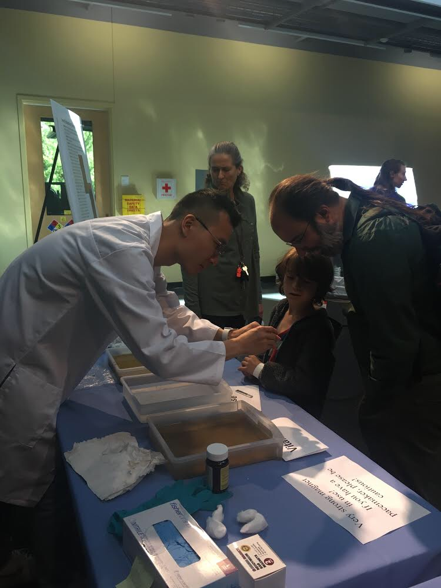
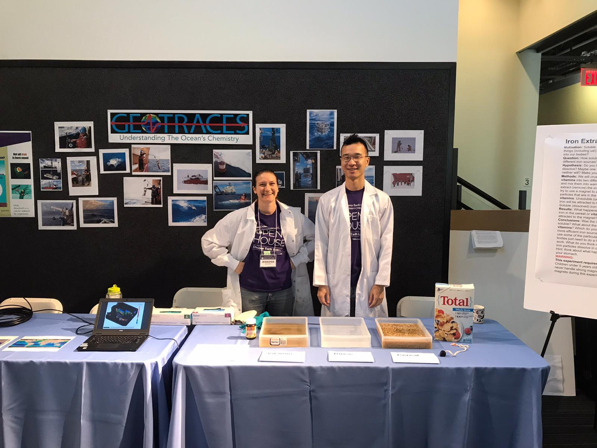
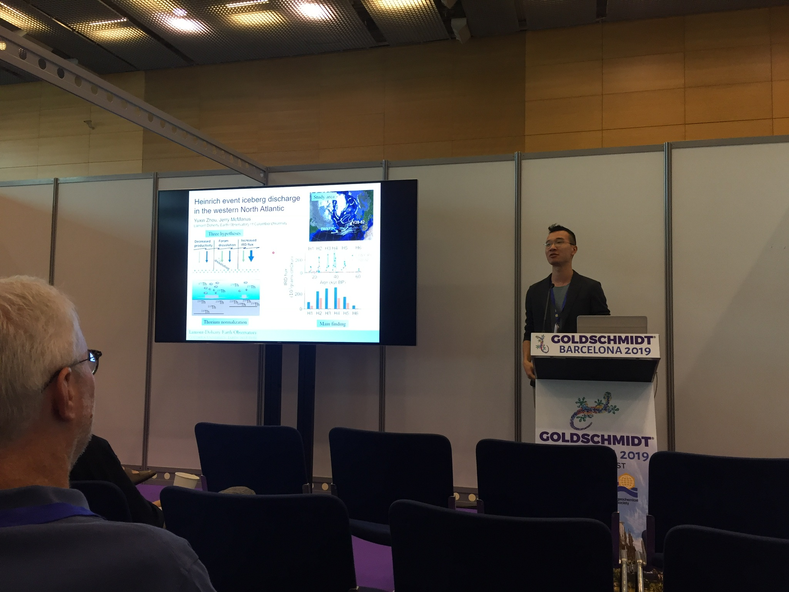
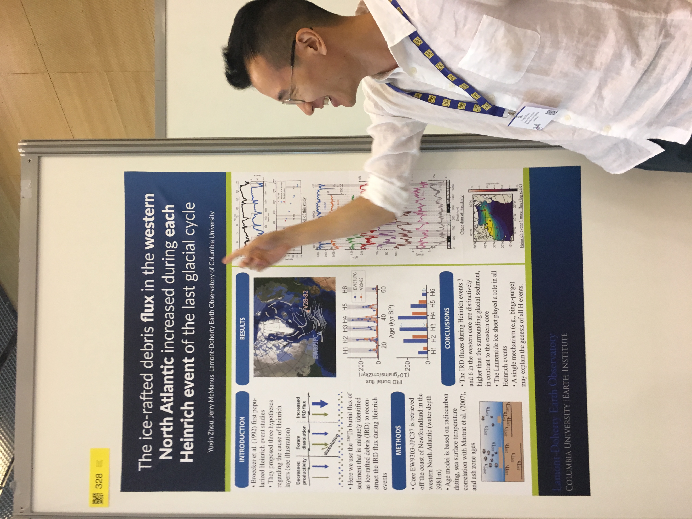
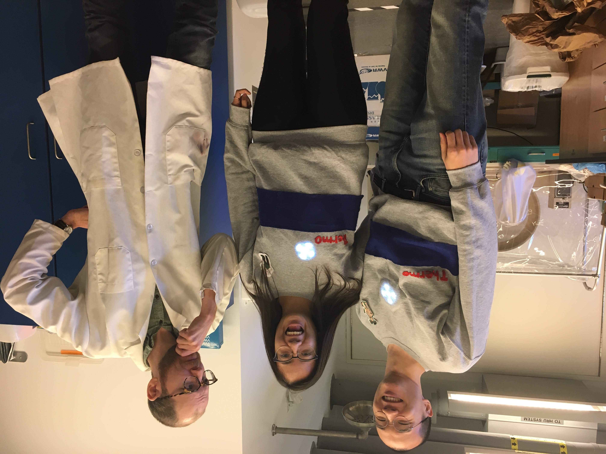
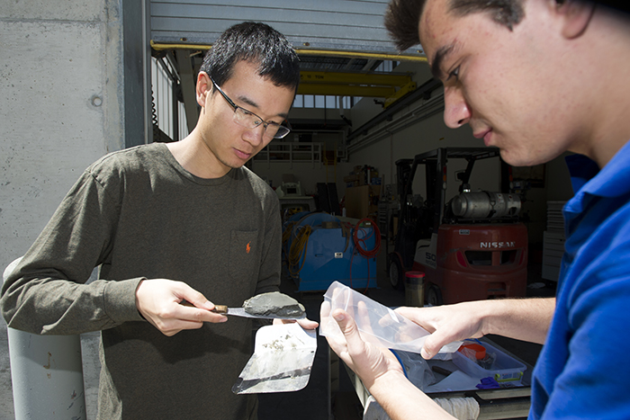
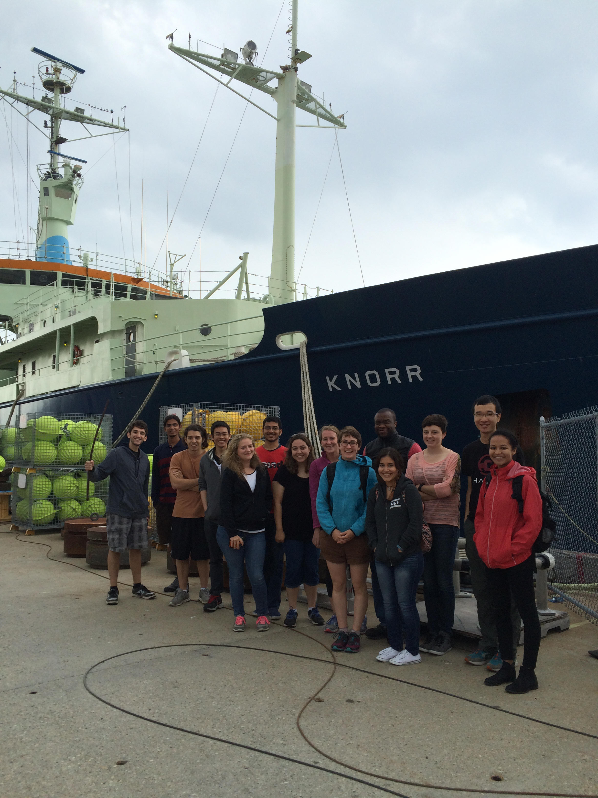
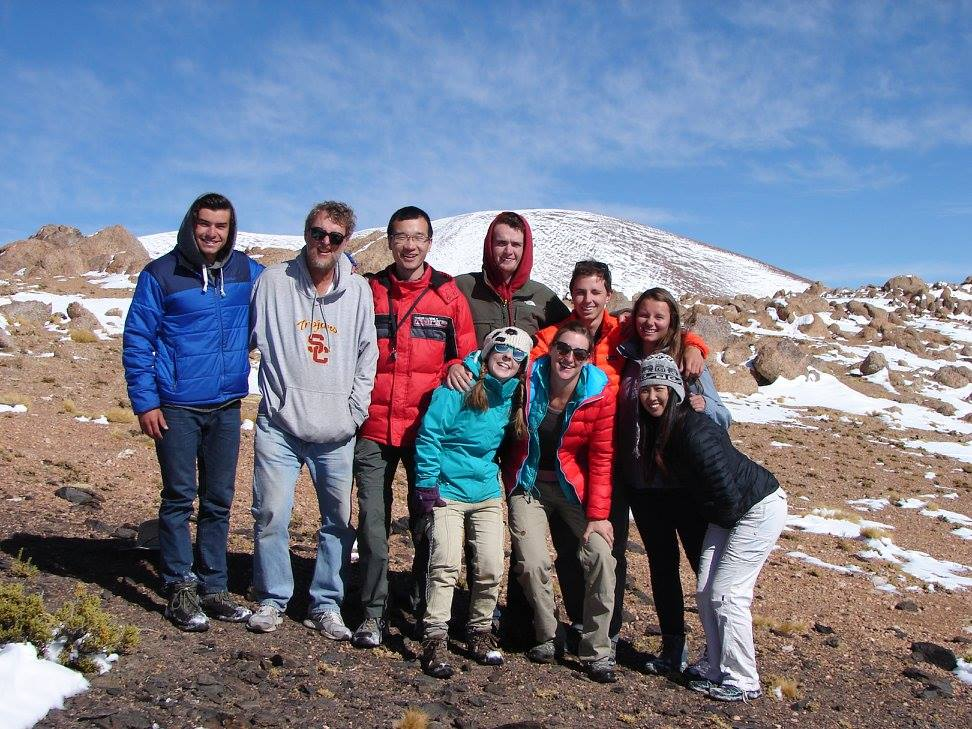
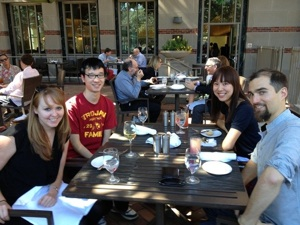
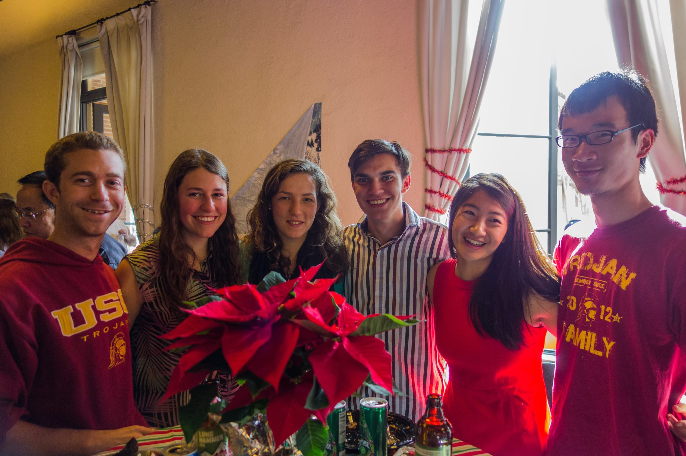

 During Lamont open house, an annual public science outreach event, I was part of a team doing an exhibit on the iron availability in the ocean.
 We fished out iron from cereals floating in water with magnets. Next to me was Jenny Middleton, a Lamont postdoc.
 Presenting my research on the history of iceberg discharge at the Goldschmidt geochemistry conference in Barcelona last year.
 Goldschmidt poster session.
 Halloween in 2018, where I dressed up as an inductively coupled plasma mass spectrometry, the machine I use to analyze samples. "Thermo" is the brand of the machine, and the light bulb represents the plasma. With me were Athena Nghiem (middle), and Tyler Ellis (right; a research staff).

Core slabbing with my labmate Henry Abrams at WHOI.

WHOI 2015 summer student fellows (partial) group photo. Floating in the background is the now retired R/V Knorr. It discovered the wreck of the RMS Titanic in 1985.

Visiting a volcano in Puna Plateau, Argentina, as a class field trip led by Professor Scott Paterson.

USC climate dynamics group lunch. We celebrated the first papers published by Ph.D students Sylvia and Jianghao.

Undergraduates group photo in the 2013 USC Earth Sciences departmental holiday party.